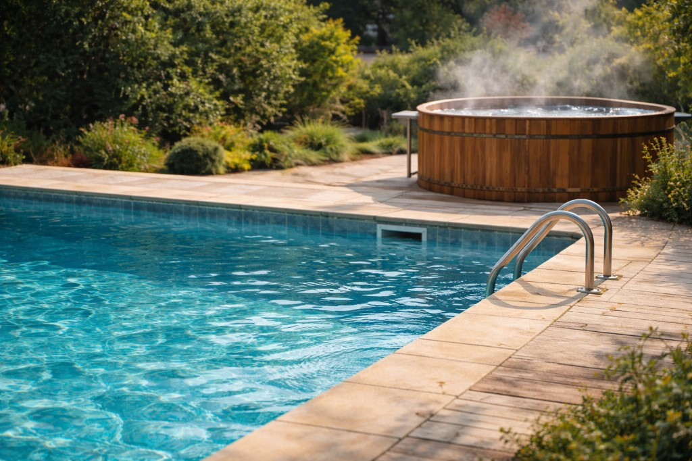

Vad påverkar elkostnaden för pool och bad?
Elkostnaden för att hålla en pool eller en badtunna i brukstygt skick styrs av flera faktorer. Här beskriver vi de viktigaste: isolering, säsong, elpris och användningsmönster.

Isolering och täckning
En pool eller badtunna som står utomhus förlorar värme till omgivningen. Bra isolering eller ett lock/täcke minskar värmeförlusten avsevärt. Det betyder att värmen (eller kylan) håller sig längre och att du behöver tillföra mindre el för att hålla temperaturen. En oisolerad pool eller en tunna utan lock kräver mer uppvärmning och kan därmed driva upp elkostnaden, särskilt under kallare nätter och i övergångsårstider.
Säsong
Under sommaren är utomhustemperaturen högre och vattnet kyls mindre snabbt. Du behöver ofta mindre tillförd energi för att hålla temperaturen. På vår och höst, och i kallare klimat, krävs mer värme. Därför varierar elkostnaden över året – ofta är den lägst mitt i sommaren och högre i början och slutet av säsongen. Det gäller både pool och badtunna.
Elpris
Elpriset per kWh är en direkt faktor: ju högre pris, desto högre kostnad för samma förbrukning. I Sverige varierar timpriset ofta över dygnet. Sajtens kalkylator visar timpriser per elområde så du kan jämföra dyra och billiga timmar. Att köra pump eller värmepump när priset är lägre (t.ex. natt eller vid överskott av el) kan sänka den totala elkostnaden jämfört med att köra under dyra timmar. Många har rörligt elpris och kan därför påverka kostnaden genom att anpassa när de värmer eller filtrerar.

Användningsmönster
Hur ofta du använder poolen eller badtunnan, och hur länge pumpen eller värmen går, påverkar den totala förbrukningen. Fler bad per vecka innebär oftast mer uppvärmning (om vattnet hinner svalna mellan gångerna). En pump som går många timmar per dag ökar elkostnaden. Att styra efter behov – t.ex. köra pumpen kortare eller värma inför planerade bad – kan sänka kostnaden utan att du behöver ge avkall på användningen.
Sammanfattning
Elkostnaden för pool och bad påverkas tydligt av: hur bra isolering och täckning du har, vilken säsong det är, vilket elpris du betalar och hur du använder värmen och pumpen. Det finns inga exakta siffror som gäller alla – men om du förstår dessa faktorer kan du bättre bedöma vad som driver din egen kostnad och var det kan finnas utrymme att sänka den. Hur elpriset varierar över dagen i ditt elområde kan du se i sajtens kalkylator.